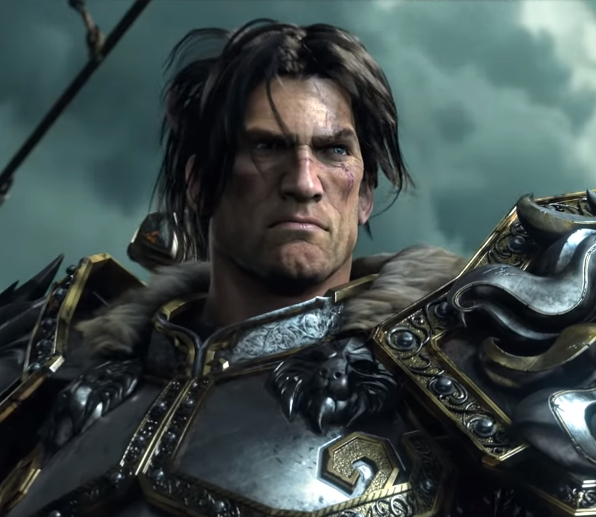
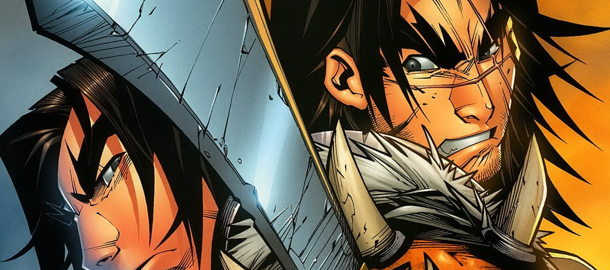
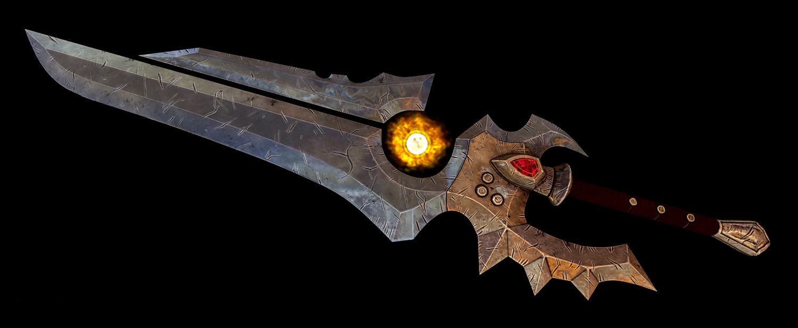

Вариан Ринн
Бывший Король Штормграда
"Преступления Орды тяжелы, Вол'джин. Но некоторые из вас восстали против тирании. Поэтому, я хочу положить конец вражде.Но знай же. Если Орда предаст идеалы чести как Гаррош... Мы сметем вас."

Вариан Ринн, также известный как Ло'гош "Призрачный волк".
Являлся королём Штормграда и главой военного совета в Альянсе.
Сын покойного короля Ллейна Ринна.
Вариан погиб в битве на Расколотых островах.
Вариан погиб в битве на Расколотых островах.
В жизни Вариана было много трагедий и конфликтов. Его отец был убит Гароной Полуорчихой.
Жена, Тиффин, погибла во время бунта. А через некоторое время короля Вариана
похищает Братство Справедливости и чёрный дракон Ониксия, скрывавшаяся в облике Леди Катраны Престор.
Вскоре, потерявший память, Ринн попадает в рабство к ордынскому тренеру гладиаторов в Калимдоре.
На арене Вариан зарабатывает прозвище "Ло'Гош", или "призрачный волк".
С помощью своих товарищей, он вспомнил кто он такой и смог победить Ониксию.

Возглавив кампании против Плети в Нордсколе и Отрёкшихся в Лордероне, он подтвердил свой статус неоспоримого военного лидера Альянса. Под его смелым руководством, люди Штормграда привели Альянс к победе против Короля-лича в Нордсколе, и теперь стремятся укрепить свои стратегические позиции против своего многолетнего противника, Орды.
Оружием короля Вариана является меч Шаламейн.

Известный своим упорством и железной волей, король Вариан Ринн стремился к защите интересов Альянса.
Он воспитывал своего сына, Андуина, как будущего короля. После того
как мир погрузился в хаос великого Катаклизма, он принял на себя военное руководство Альянса,
и поклялся создать новую судьбу Азероту.